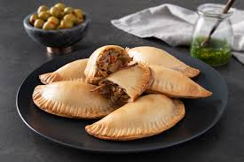
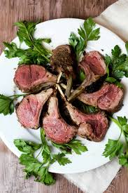
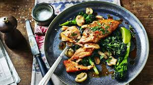
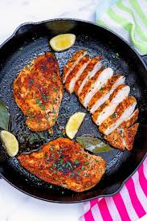
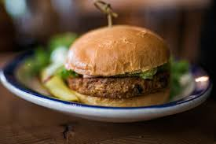
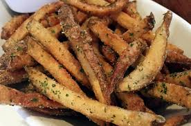
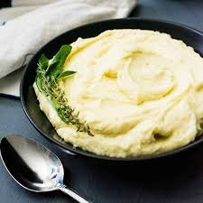
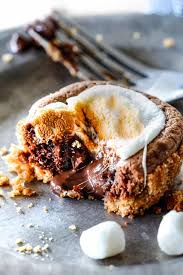
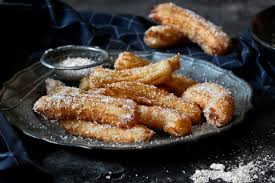
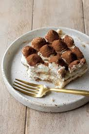

Smoked Brisket Egg Rolls:
Slow-braised pulled brisket wrapped in a crispy shell, served with a tangy Texas bourbon BBQ aioli.

Pastrami Empanadas:
Flaky pastry dough stuffed with seasoned, sautéed pastrami and caramelized sweet onions, paired with a honey-mustard dipping sauce.
Crispy Rice Tuna Tartare:
Spicy yellowfin tuna tartar resting over pan-fried, crispy sushi rice blocks, finished with an avocado mousse glaze.
Rich Yemenite Chicken Soup:
A traditional comforting bone broth loaded with shredded pulled chicken, fresh root vegetables, and aromatic spices.
✦ Premium Steaks & Chops ✦ All steaks are certified Glatt Kosher, aged in-house, and char-broiled over a hardwood flame.
12 oz. Center-Cut Ribeye:
Well-marbled, highly tender signature cut, basted in rich beef tallow and served with a charred shallot reduction.
22 oz. Bone-In Cowboy Ribeye:
A massive, thick-cut bone-in rib chop grilled to your desired temperature, perfect for the ultimate steak purist.
10 oz. Peppercorn Filet Mignon (Cured/Faux):
Ultra-lean, tenderized shoulder cut crusted with cracked black peppercorns and finished with a rich red-wine demi-glace.
Slow-Roasted BBQ Ribs:
Full rack of beef short ribs slathered in a house-made, smoky brown sugar barbecue glaze and cooked until fork-tender.

Herb-Crusted Baby Lamb Chops:
Triple-cut lamb chops flame-grilled with rosemary and garlic, served over a bed of mint-infused jus.
✦ Alternative Mains ✦

King Salmon:
Crisp-skinned fresh salmon fillet served over wild rice with braised wild mushrooms and a light lemon-herb jus.

Cast-Iron French Chicken Breast:
Sautéed airline chicken breast cooked with caramelized pearl onions, fingerling potatoes, and a dry white wine reduction.

The Steakhouse Burger:
A custom 10 oz. prime beef blend on a toasted pretzel bun, topped with house-cured pastrami, crispy leeks, avocado crema, and thick steak fries.
✦ Decadent Pareve Sides ✦ All sides are entirely dairy-free (pareve).

Tallow-Fried Truffle Fries:
Hand-cut potatoes fried in beef tallow, tossed with white truffle oil and fresh parsley.
Garlic Roasted Wild Mushrooms:
A medley of sautéed shiitake, oyster, and cremini mushrooms cooked down with garlic, olive oil, and dry sherry.

Creamy Mashed Potatoes:
Velvety, smooth Yukon gold potatoes whipped with rich olive oil and roasted garlic broth.
Charred Broccolini:
Grilled stems tossed with toasted pine nuts, sea salt, and a squeeze of fresh lemon juice.
✦ Desserts ✦

Chocolate S'mores Explosion:
A warm chocolate lava cake topped with toasted, dairy-free marshmallows, graham cracker crumbs, and a scoop of vanilla bean soy ice cream.

Cinnamon Sugar Churros:
Crispy, golden Spanish churros served warm with a rich, dark chocolate dipping sauce.

Classic Tiramisu:
Espresso-soaked ladyfingers layered with a light, creamy pareve mascarpone alternative and dusted with dark cocoa powder.
 Smoked Brisket Egg Rolls:
Smoked Brisket Egg Rolls: Crispy Rice Tuna Tartare:
Crispy Rice Tuna Tartare: Rich Yemenite Chicken Soup:
Rich Yemenite Chicken Soup: 12 oz. Center-Cut Ribeye:
12 oz. Center-Cut Ribeye: 22 oz. Bone-In Cowboy Ribeye:
22 oz. Bone-In Cowboy Ribeye: 10 oz. Peppercorn Filet Mignon (Cured/Faux):
10 oz. Peppercorn Filet Mignon (Cured/Faux): Slow-Roasted BBQ Ribs:
Slow-Roasted BBQ Ribs: Garlic Roasted Wild Mushrooms:
Garlic Roasted Wild Mushrooms: Charred Broccolini:
Charred Broccolini: